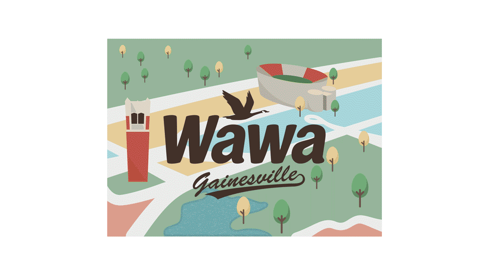
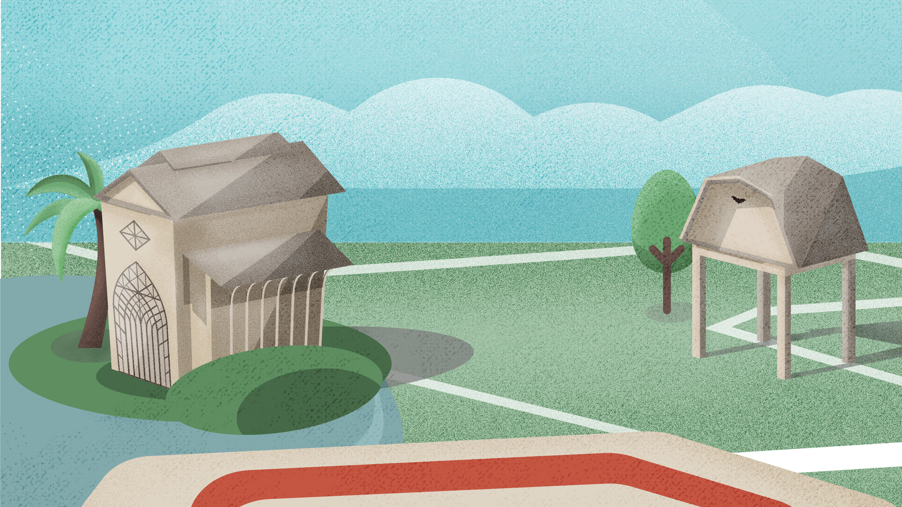
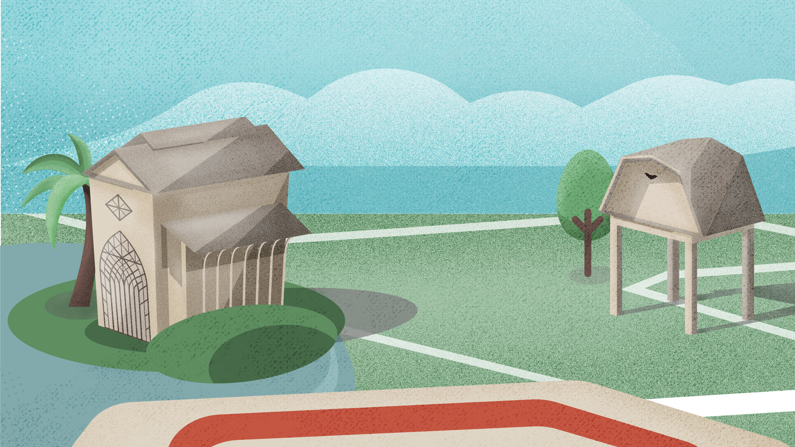

🦆 Wawa
The Wawa Convenience Store located in Gainesville Florida is a block away from the University of Florida campus.They requested a mural that depicted iconic UF locations.
The most interesting part of this mural, was that the project was scrapped due to funding halfway through during my first semester as an intern with ChangeUp. Then when I returned 4 months later after an academic semester, it was brought back, so naturally this project landed back on my desk. It was very gratifying to see how much my design skills had matured over the course of a couple months.
 



If you're curious, I've identified each landmark and corresponding illustration by name and location in this key document.